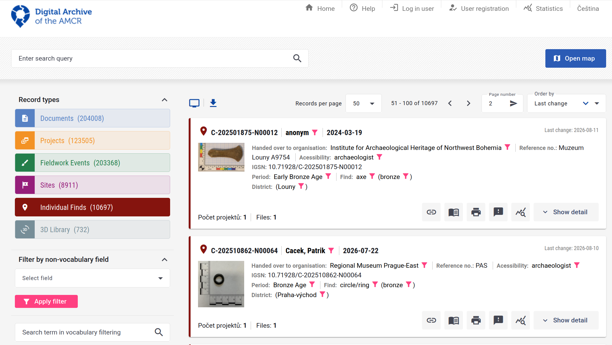

Artefacts: datasets and annotation
Making the data a model can learn from
Petr Pajdla
Institute of Archaeology, Czech Academy of Sciences, Brno
Ronald Harasim
Institute of Archaeology, Czech Academy of Sciences, Brno
David Spáčil
Institute of Archaeology, Czech Academy of Sciences, Brno
15. 9. 2026
The plan
| 1 | The artefacts dataset — where the photographs come from | |
| 2 | What “annotated” means · COCO, YOLO, Pascal VOC | |
| 3 | Annotation tools · live demo of CVAT with SAM 2 | |
| 4 | You annotate, in your own CVAT project | 16 minutes |
| 5 | What you had to decide | discussion |
| 6 | Three problems — imbalance · vocabularies · missing metadata | |
| 7 | ArchaeoTag — everyone plays a round | phones out |
| 8 | Discussion — your dataset, your label set | groups 1 & 2 report |
Half of this session is you working, not me talking.
Yesterday’s number
80%
have never used an image annotation tool.
- It is probably the largest single cost in every project we look at this week
- It is the one place where your expertise, not the model’s, decides the outcome
- And it is where the decisions that sink a project get made — quietly, early, by whoever built the label set
The artefacts dataset
Where these photographs come from
- A detectorist finds an object in a field
- They report it — findspot, a photograph, sometimes a guess at what it is and some other metadata
- An archaeologist checks the record and assigns/confirms a type from a controlled list
- The photograph lands in AMČR-PAS, the public portal of the Archaeological Information System of the Czech Republic
- Explore the data and images in the Digital archive of the Archaeological Map of the Czech Republic
Digital Archive of the AMCR – Individual finds selected

What is in our dataset?
9 762
photographs
10 749
annotations
112
artefact types used
- Every annotation is a polygon, not just a box — 10 749 of them
- 207 types are declared in the file; 95 of them are never used once
- One photograph carries as many as 29 objects
This is a real working dataset, with all the untidiness that implies. We will open the actual file in a minute.
What “annotated” means
Four things people mean by it

Rosary: AMČR M-202400071-N00083, CC BY-NC 4.0
Same photograph, same objects. The annotation is a choice, and it is the expensive one.
The task shape sets the cost
| You want | You annotate | Roughly, per image |
|---|---|---|
| what is in this photograph? | one label | seconds |
| how many, and where? | a box per object | tens of seconds |
| what is its exact outline / area? | a polygon per object | minutes |
| what condition is it in? | attributes per object | seconds — if you decided the fields in advance |
The order matters
Going from boxes to polygons after you have annotated 2 000 images means annotating 2 000 images again. Going the other way is free.
Yesterday: the task shape follows from the question. Today: and the question has a cost.
COCO: four keys and a convention
{
"info": { ... },
"licenses": [ ... ],
"images": [ {"id": 1, "file_name": "...", "width": 3978, "height": 2762}, ... ],
"categories": [ {"id": 1, "name": "adornment"}, {"id": 63, "name": "fibula"}, ... ],
"annotations": [ {"image_id": 1, "category_id": 63, "bbox": [...], "segmentation": [...]}, ... ]
}- One file for the whole dataset — images, label set and annotations together
annotationspoint atimagesandcategoriesby id, so nothing is repeated- It carries boxes and polygons in the same record, which is why it is the default
Tip
Common Objects in Context — a benchmark dataset from 2014 whose file layout outlived it and became the de-facto interchange format.
One annotation, as it really is
{
"categories": [
{"id": 58, "name": "cross"}, …
],
"images": [
{"id": 8987, "file_name": "…/M202400071N00083F01.jpeg",
"width": 3978, "height": 2762}, …
],
"annotations": [
{"id": 9872, "image_id": 8987, "category_id": 58,
"bbox": [837.8, 1760.0, 485.2, 445.9],
"area": 216350.7,
"segmentation": [[1301.3, 1762.7, 1279.0, 1760.0, …]],
"iscrowd": 0,
"attributes": {"recognizable": "true", "occluded": false}}, …
]
}image_idpoints intoimages,category_idintocategories— the three lists are joined only by idbboxis x, y, width, height — corner, not centresegmentationis one flat list:x1 y1 x2 y2 …, here 47 verticescategory_idis just58. The word cross lives only incategoriesattributesis not standard COCO — the tool added it
The same annotation, three formats
COCO · one JSON file for the whole dataset
amcr-pas_v0.json
bbox is the top-left corner plus width and height, in pixels. The polygon is kept. The image and the class name are found only by id.
Pascal VOC · one .xml per image
Annotations/M202400071N00083F01.xml
The box is two corners, in whole pixels. The class name is written out, and the file names its own image. The polygon is gone.
Important
Every conversion is lossy in a different direction — and 57 means nothing without the data.yaml it came with.
Annotation tools
Four tools, one job
| Tool | Runs | Good for |
|---|---|---|
| CVAT — cvat.ai | a server, or cvat.ai | images and video, a team, SAM 2 built in · what we use today |
| Label Studio — labelstud.io | a server | any data type — text, audio, time series as well as images |
| VIA — VGG Image Annotator | one HTML file in your browser | a small set, one person, no install, works offline |
| makesense.ai — makesense.ai | in your browser | quick boxes and polygons, no account, images stay on your computer |
They all do the same thing: shapes, classes, attributes → a file. Pick by team size and data type, and check the export formats before you start.
CVAT: the demo
Why CVAT today
- Built for images and video
- Projects → tasks → jobs, split across people
- SAM 2 one click away, under AI Tools
Live — the steps you will do next
- Create a project and paste in
labels.json: the classes and the three questions - Create a task from the photographs
- Outline one find with SAM 2, give it a class, answer its questions
- Export as COCO and open the JSON
labels.jsonis the schema. If you can read it, you know exactly what the dataset will contain.
Note
The AMČR-PAS annotations you have been looking at were made in CVAT — that is where recognizable and occluded come from.
Why a polygon hurts

Rosary: AMČR M-202400071-N00083, CC BY-NC 4.0
One photograph. At 10 749 annotations across the collection, that is the scale of what somebody already did by hand.
SAM 2: click instead of trace
- A foundation model for segmentation — it has no idea what a fibula is, and does not need one
- You give it a point, a box or a scribble; it returns a mask
- It is class-agnostic: it finds the boundary, you supply the label
- In CVAT it is under AI Tools → Interactors: click the object, right-click what should be left out, then correct the result
Watch it fail
A corroded find on a background close to its own tone, and the mask leaks into the scale bar. Model-assisted is not model-decided — correcting a bad mask can cost more than drawing a good one.
Your turn
CVAT, on our server
or this one, it is misbehaving:
Type it into your browser. It is a local address — it works only on the c network here.
Set up your project
About 5 minutes. Everyone works on the same 10 photographs, each in their own project.
- Open CVAT at
http://10.10.1.40:8081→ Create an account - Pull the lessons repository — everything is in
2-tuesday-artefacts/ - Projects → + → Create a new project · give it a name · open the Raw tab · replace everything in it with the contents of
labels.json· Done · Submit & Open - In the project: + → Create a new task · give it a name · add the ten files from
images/under Select files · Submit & Open - Click the job in the task — that opens the first photograph
Tip
Stuck on step 3? The Raw tab must contain only labels.json — one [ at the start, one ] at the end.
Annotate
16 minutes. Everything after this slide is about decisions you make now.
- Outline each artefact — SAM 2, polygon or box — and give it a class
- In the objects list, answer fragment and damage
- Whole photo: Setup tag → photo, answer scale
- Not sure? Annotate it anyway, say why in note
- Save (Ctrl+S), next photo
fragment a piece of an object, not a whole one?
damage none, minor or major?
scale is there a scale bar in the frame?
Tip
Do not compare with your neighbour. We will talk about what you decided, and why.
What you had to decide
hands up Photo 04: coin or pendant? · Photo 06: mount or pendant? · Photo 08: one object, or several?
- Your outlines will be close — SAM 2 saw to that
- Your classes will not, on two or three of the photographs — deliberately so
- Your attributes even less: fragment and damage are judgements nobody defined for you — is a broken fibula a fragment, or damaged?
SAM made your outlines agree. It could not make your meanings agree — and that is the disagreement inside every archaeological dataset you will ever download.
Agreement is a measurement
- If two people disagree on 15% of images, no model trained on it can do better than 85% — the ceiling is in the data, not the architecture
- Measure it: annotate an overlap set twice, report Cohen’s κ (two annotators) or Fleiss’ κ (more)
- Where κ is low, the fix is not more annotators. It is a better definition, with pictures of the edge cases
Important
An annotation guide with worked examples of the hard cases is worth more than doubling your training set.
Three problems
1 · What the ground gives you
Fibulae and coins are 40.1% of every annotation in the dataset.
The tail is the dataset

- 77 of the 112 types have fewer than 50 annotations — together, 8.9% of the data
- 95 types are in the label set and have never been seen
- A model trained on this learns 35 types well and the rest not at all
A classifier that ignores the image and always answers fibula scores 22%. Always fibula or coin: 40.1%.
This is reporting bias, not the past
- Metal detectors find metal — a fibula beeps, a potsherd does not
- Finders report what looks like a find: complete, decorated, recognisable
- Recorders assign the type they are confident about, and amorphous fragment when not
- Archives digitise what is already catalogued
Important
40.1% fibulae and coins is a fact about detectorists, reporting and archives. It is not a fact about what was in the ground.
A model trained here learns the collection process at least as well as it learns the artefacts.
2 · Your labels are not their labels

The British PAS (FISH vocabulary) against AMČR-PAS: 841 terms, and four different ways to land on coin. Strap end is mordant — no string match finds that.
SKOS, in three predicates
| means | safe to do | PAS → AMČR-PAS | |
|---|---|---|---|
skos:exactMatch |
interchangeable in any context | merge the two classes | 119 |
skos:closeMatch |
interchangeable in some contexts | merge, and say so in the paper | 53 |
skos:broadMatch / narrowMatch |
one is wider than the other | roll the narrow one up; never down | 232 / 7 |
skos:relatedMatch |
associated, not substitutable | do not merge | 17 |
| (none) | no counterpart | leave out, and count what you lost | 25 |
closeMatch does not chain
A closeMatch B and B closeMatch C says nothing about A and C. Two hops through a crosswalk and you have a class that means whatever the path happened to be.
SKOS is a W3C standard for publishing exactly this: concepts with stable URIs, their labels in several languages, and typed links between vocabularies.
The mapping, as a file
@prefix skos: <http://www.w3.org/2004/02/skos/core#> .
@prefix fish: <http://purl.org/heritagedata/schemes/mda_obj/concepts/> .
@prefix amcr: <https://example.org/amcr-pas/> . # placeholder, see below
fish:96665 skos:prefLabel "Brooch"@en ;
skos:exactMatch amcr:fibula .
fish:140465 skos:prefLabel "Strap end"@en ;
skos:exactMatch amcr:mordant .
fish:97525 skos:prefLabel "Coin hoard"@en ;
skos:narrowMatch amcr:coin .
fish:95426 skos:prefLabel "Jetton"@en ;
skos:relatedMatch amcr:coin .- One row of the sheet is one triple — Turtle, the W3C text format for RDF
fish:URIs are the FISH thesaurus’ own;amcr:is a placeholder — the sheet has AMČR-PAS labels, not URIs- validated has no SKOS predicate: 388 of 841 rows are unchecked, so publish the checked ones, or say who checked what
What a crosswalk buys you
- A shared coarse level — brooch, pin, buckle map cleanly; seal has nowhere to go
- Training on the union of two collections, honestly, with the merge written down
- Evaluating a Czech-trained model on British data without silently renaming anything
The realistic outcome
You will lose resolution. Of the 112 AMČR-PAS categories in the dataset, only 63 have a validated exactMatch in PAS — and 28 PAS types roll up into instrument alone. That is still a far better dataset than either alone — and the mapping is a research output in its own right.
3 · The metadata nobody has time for
What the file records:
- Every one is a seconds-long judgement — and 10 749 × several seconds is weeks of somebody’s time
- None of it needs a specialist. Anyone can see whether an object is broken or whether there is a ruler in the frame
- Which makes it exactly the kind of work you can ask a crowd to do
ArchaeoTag
Guess what this is
Phones out. Open the URL on the board — three minutes of play.
- You are shown a photograph of a find and asked what it is
- Along the way you answer the easy questions: a fragment? damaged? is there a scale?
- You find out whether you were right — that is the game
- We get a crowd-sourced answer to the fields the file does not have
Tip
The guessing is the incentive. The metadata is the point, and nobody playing has to care.
What a guess is worth
- One guess is noise. Twenty guesses on the same photograph is a distribution
- Where players agree, you have a usable attribute at effectively zero cost
- Where they disagree, you have found a genuinely ambiguous object — which is worth knowing, and is exactly what you want an expert to look at
- Their guesses at the class are a free baseline: how hard is this dataset for a human?
The same logic as the last hour: disagreement is data, not failure.
Warning
Crowd labels are good for is there a scale bar in this photograph. They are not good for is this an Almgren 236 fibula. Know which question you are asking.
Discussion
Your dataset, your label set
8 minutes in your group. Groups 1 & 2 report back.
- Take one dataset somebody in the group works with. What are its classes — and who decided them?
- What is the annotation bill? Number of images × the level you actually need. Give us hours.
- What in that dataset is over-represented for reasons that have nothing to do with the past — how it was collected, who reported it, what survives?
- Which attributes would you want that nobody has recorded? Could a stranger answer them?
Note
Question 2 in hours, out loud. It is usually the moment a project’s scope becomes visible.
Reporting back
Groups 1 & 2, then anyone with a good answer to (3):
- The dataset and who decided its classes
- The bill, in hours
- The bias you named
Tip
This afternoon is yours: present your own data and problems. Everything on this slide is a good place to start from.
Wrapping up
Five things to carry into the week
- The annotation schema is a commitment, not a setting — boxes to polygons means starting again
- Every format is lossy in its own direction; keep the COCO and export from it
- Disagreement between annotators is the ceiling on any model you train
- An imbalanced dataset describes how it was collected at least as much as what it contains
- Labels are local. Mapping between vocabularies is real work, and worth publishing
Next up
This afternoon — your own projects and datasets. Tomorrow — microscopy, and what to do to images before a model ever sees them.
Where to read more
Tools
- CVAT — cvat.ai
- Label Studio — labelstud.io
- VIA — robots.ox.ac.uk/~vgg/software/via
- makesense.ai — makesense.ai
- SAM 2 — ai.meta.com/sam2
- COCO format — cocodataset.org/#format-data
- SKOS primer — w3.org/TR/skos-primer
Data and vocabularies
- AMČR-PAS — amcr-info.aiscr.cz
- Getty AAT — getty.edu/research/tools/vocabularies/aat
- Portable Antiquities Scheme — finds.org.uk
- ARIADNE — ariadne-research-infrastructure.eu
Computer Vision in Archaeology · Brno 2026